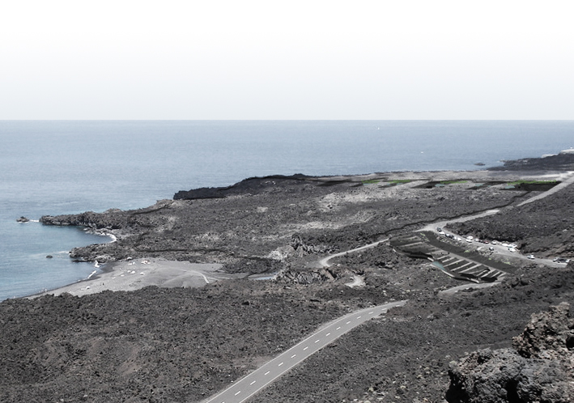
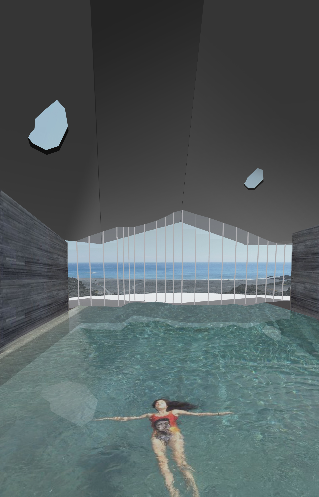
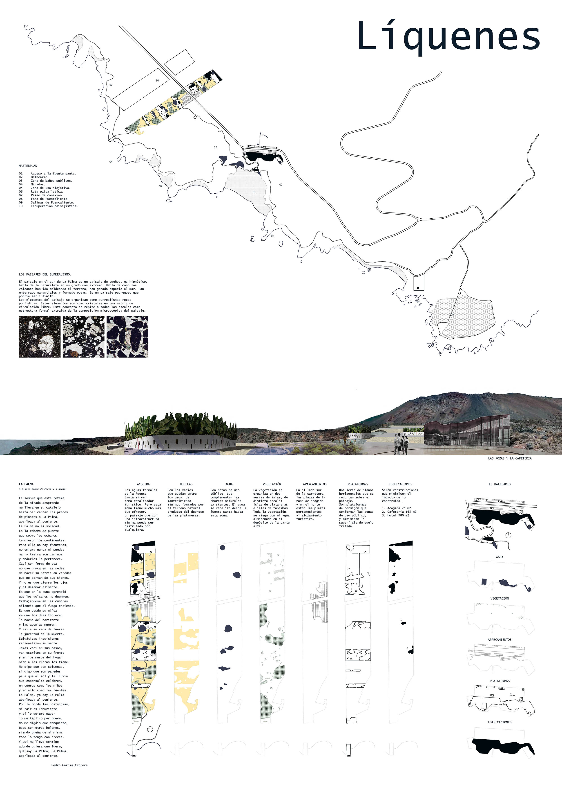
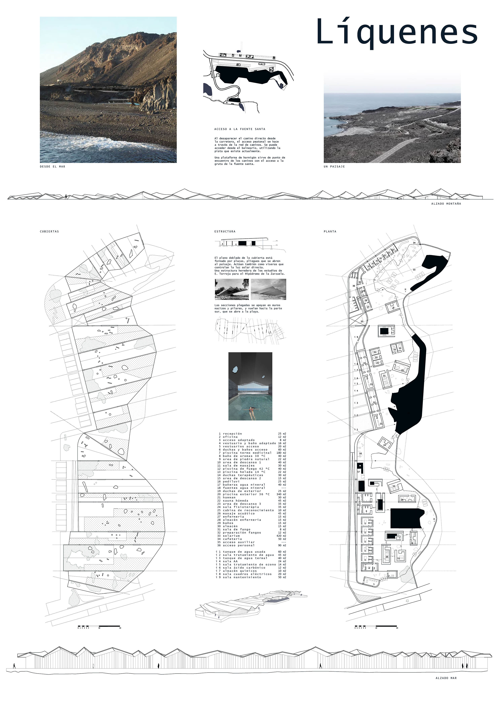

LÍQUENES
.jpg)
LA PALMA A Blanca Gómez de Pérez y a Renán La sombra que esta retama de la mirada desprende me lleva en su catalejo hasta oír cantar las preces de pinares a La Palma, abarloada al poniente. La Palma no es soledad. Es la cabeza de puente que sobre los océanos tendieron los continentes. Para ella no hay fronteras, no emigra nunca ni puede; mar y tierra son caminos y andarlos le pertenece. Casi con forma de pez no cae nunca en las redes de hacer su patria en veredas que no partan de sus sienes. Y no es que cierre los ojos y al desamor alimente. Es que en la cuna aprendió que los volcanes no duermen, trabajándose en las cumbres silencio que el fuego enciende. Es que desde su niñez ve que los días florecen la noche del horizonte y las agonías mueren. Y así a su vida da fuerza la juventud de la muerte. Selváticas intuiciones racionalizan su mente. Jamás vacilan sus pasos, van escritos en su frente y en los muros del hogar bien a las claras los tiene. No digo que son columnas, sí digo que son paredes para que el sol y la lluvia sus esponsales celebren, en cueros como los niños y en alto como las fuentes. La Palma, yo soy La Palma abarloada al poniente. Por la borda las nostalgias, mi raíz es Taburiente y si lo quiero mayor lo multiplico por nueve. No me digáis que conquiste, ésos son otros belenes, siendo dueña de mí misma todo lo tengo con creces. Y así me llevo conmigo adonde quiera que fuere, que soy La Palma, La Palma. abarloada al poniente. Pedro García Cabrera




